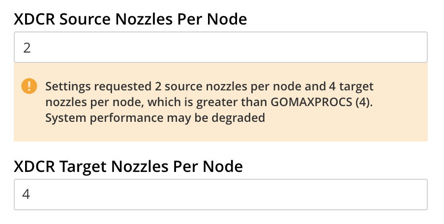

XDCR Advanced Settings
XDCR performance can be fine-tuned.
Table of XDCR Advanced Settings
The performance of XDCR can be fine-tuned, by means of configuration-settings. These can specified either when a replication is defined, or subsequently.
For information on using the REST API to modify settings either globally or for a specific, existing replication, see Managing Advanced Settings.
Couchbase Web Console allows a subset of settings to be configured interactively. Those that appear in the Advanced Settings dialog are explained in the table below. For more information, see Create a Replication.
| Option | Description |
|---|---|
XDCR Protocol |
Must be Version 2; which is XMEM, and uses the Memcached Binary protocol. |
XDCR Compression Type |
Specifies whether documents are to be compressed for XDCR. See XDCR Compression-Type Values, below. |
XDCR Source Nozzles per Node |
Determines the number of XDCR source nozzles per node.
This value must be less than or equal to that specified for A small value of 2 or 4 is often sufficient. The default is 2. The value-range is 1-100. Note that if combining the values specified for  |
XDCR Target Nozzles per Node |
Determines the number of XDCR target nozzles (concurrent XDCR worker threads) per node.
A high value can be used if the target nodes have high processing power.
The default is 2.
The value-range is 1-100.
This value must be greater than or equal to that specified for Note that if combining the values specified for |
XDCR Checkpoint Interval |
Specifies the duration of the Checkpoint Interval, in seconds. During this interval (which does not affect the persistence of data), XDCR computes and persists checkpoint documents, which contain the high sequence number for each vBucket successfully replicated to the target cluster. The default value is 600. The minimum is 60; the maximum is 14400. If the replication is restarted by user, or recovers from an error, the checkpoint documents can be used to determine the starting point of the replication, to avoid unnecessary work. The shorter the interval, the more accurate the checkpoint documents, and the smaller the amount of work needed at replication restart. Note that the computation and persistence of checkpoint documents use considerable system resources and may impact XDCR performance. |
XDCR Batch Count |
Specifies the document batching count, in the range of 500 to 10000. The default is 500. As with XDCR Batch Size (explained immediately below), increasing this value by 2 or 3 times typically improves XDCR transmission-rates, since larger batches of data are sent in the specified interval. Overall replication performance is correspondingly improved, provided that disk-persistence can be adequately managed on the target cluster. (Note that the volume or reads and writes may be significantly greater on clusters that function both as sources and targets for bidirectional replication.) Depending on the size of the documents, a batch is complete when either the count or size is reached first. For example, given the default settings of 500 and 2048 for count and size, if 500 documents of 1 Kb each are received, a batch will be completed and sent, even though the batch itself has only a size of 500 Kb, which is less than the default setting of 2048. |
XDCR Batch Size (kilobytes) |
Specifies the document batching size, in the range of 10 to 10000 (kilobytes). The default is 2048. As with XDCR Batch Count (explained immediately above), increasing this value by 2 or 3 times typically improves XDCR transmission-rates, since larger batches of data are sent in the specified interval. Overall replication performance is correspondingly improved, provided that disk-persistence can be adequately managed on the target cluster. Depending on the size of the documents, a batch is complete when either the count or size is reached first. For example, given the default settings of 500 and 2048 for count and size, if 500 documents of 1 Kb each are received, a batch will be completed and sent, even though the batch itself has only a size of 500 Kb, which is less than the default setting of 2048. |
XDCR Failure Retry Interval |
Specifies the interval during which XDCR waits before attempting to restart replication, after a server or network failure. The value-range is 1 to 300 seconds, with the default being 10. Lower values are suitable for handling more frequent failures. |
XDCR Optimistic Replication Threshold |
Specifies, in bytes, a compressed-document size, in the range of 0 to 20MB. The default is 256 Bytes. For documents larger than so specified, XDCR fetches metadata from the target cluster, in order to perform conflict resolution on the source, prior to replication. For documents that are smaller, XDCR replicates the document to the target without performing conflict resolution on the source (in consequence of which, conflict resolution is performed only on the target). Note that a low setting risks increased latency, due to a higher number or metadata fetches; but may also reduce the number of required replications (due to source and target having identical copies of the document). A high setting lowers latency during replication, since the number of metadata fetches is reduced; but may also raise the replication-rate excessively, overwhelming either network or target cluster. |
XDCR Statistics Collection Interval |
Specifies, in seconds, how frequently XDCR Statistics are updated. |
XDCR Network Usage Limit |
Specifies the upper limit for network usage during replication, for the entire cluster, in MB per second. The default is 0, meaning no limit is applied. The limit applies only to mutations: it does not apply to other XDCR communications, such as those related to server topology and runtime statistics. Note that the limit for each individual node is the limit for the entire cluster divided by the number of nodes in the cluster. |
XDCR Logging Level |
Specifies the log level for the replication.
Accepted values are |
Note that the XDCR conflict resolution policy is set on a per bucket basis, during bucket creation: it cannot subsequently be changed. The default conflict resolution setting is based on sequence number. Alternatively, conflict resolution based on timestamp can be selected. For more information, see XDCR Conflict Resolution.
XDCR Compression-Type Values
The XDCR Compression Type setting can be either Auto or None:
-
If
Autois specified, data compression is provided during replication, provided that the target cluster is running Couchbase Server 5.5 or later. If the target cluster is not running Couchbase Server 5.5 or later, data compression is not provided during replication. (Note that the consequences of specifyingAutoas the value ofcompressionTypeare thereby determined irrespective of whether the data resides in the source bucket in compressed or uncompressed form.) -
If
Noneis specified, data compression is not provided during replication if the target cluster is not running Couchbase Server 5.5 or later. If the target cluster is running Couchbase Server 5.5 or later:-
If the data resides in the source bucket in uncompressed form, data compression is not provided.
-
If the data resides in the source bucket in compressed form, data compression is provided.
-